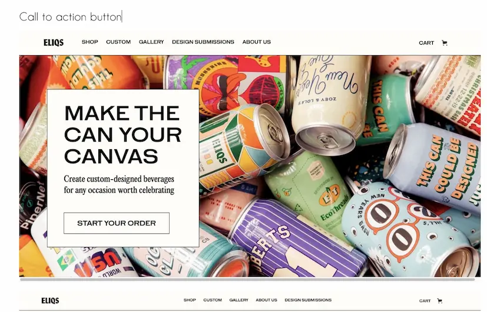
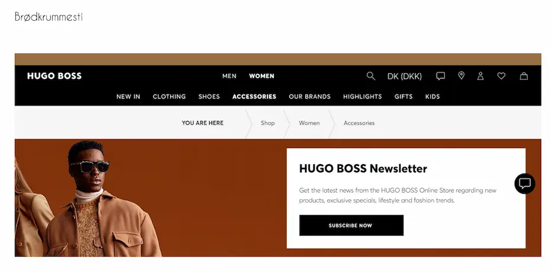
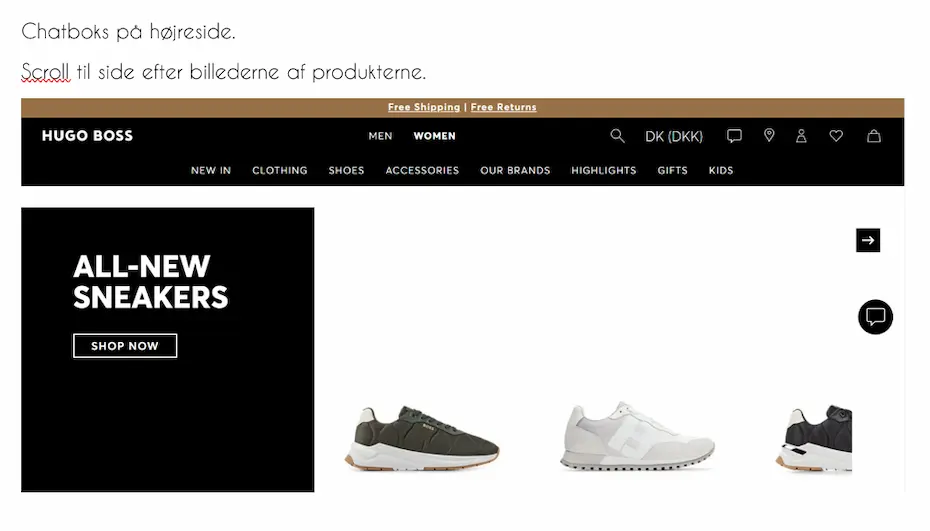
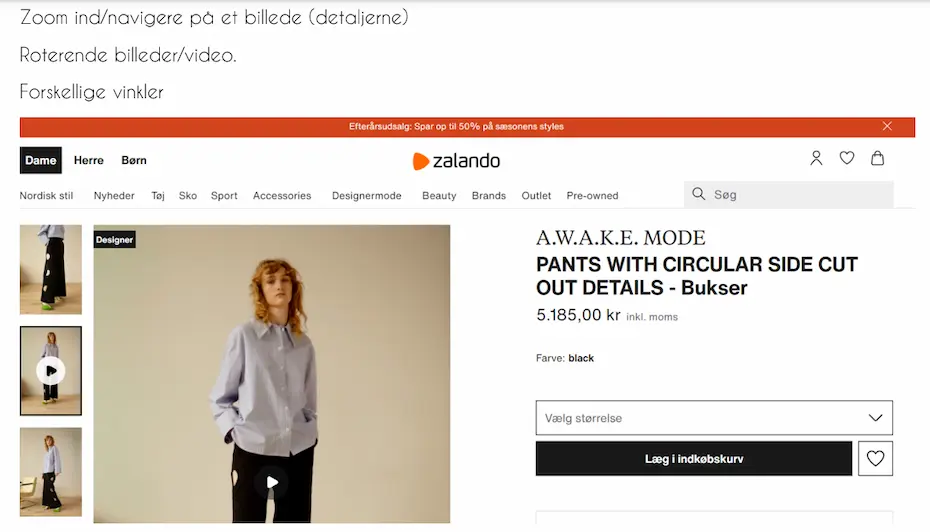
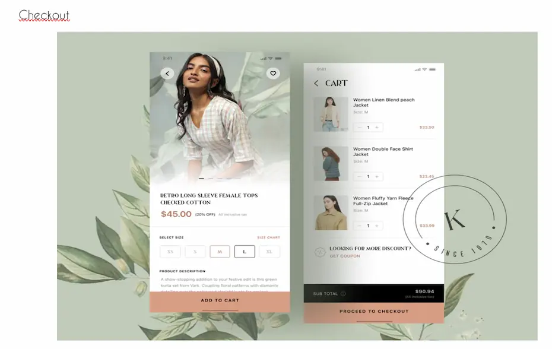
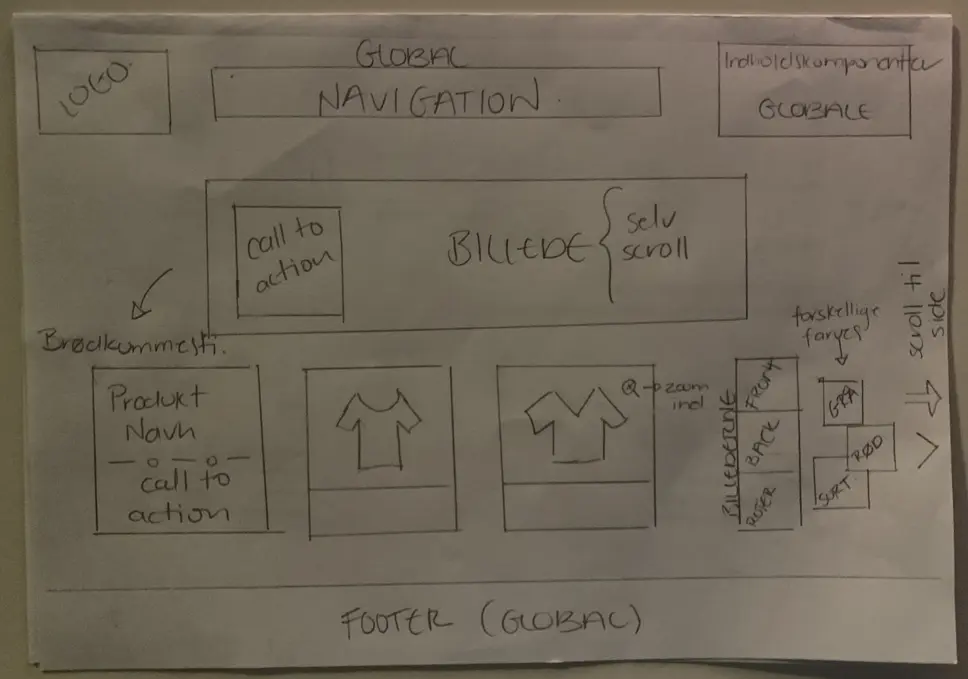
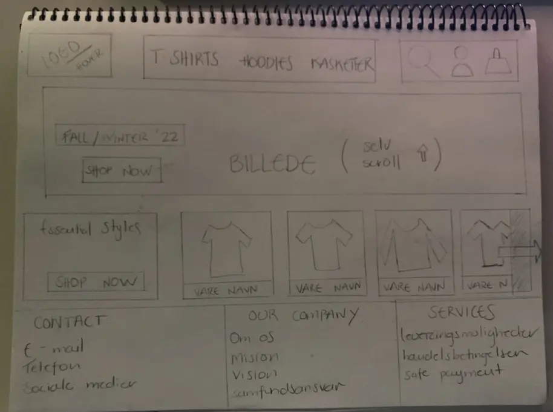
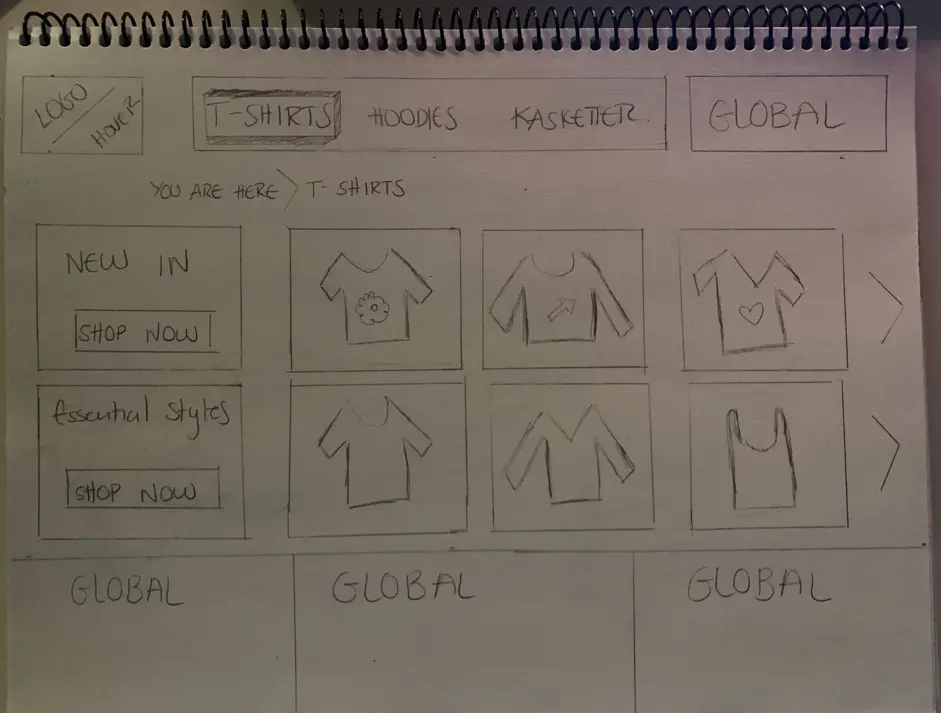
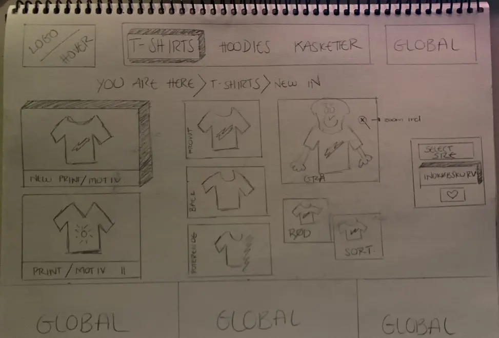
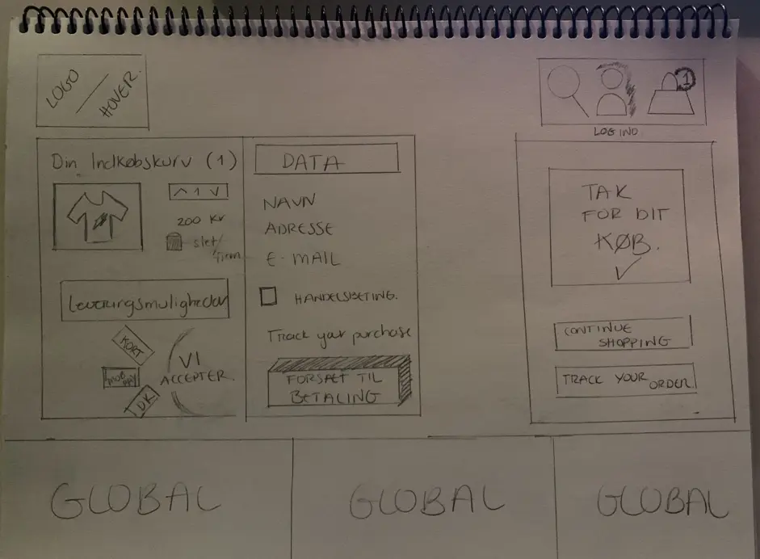

UX Prototype
For at designe prototypen til min webshop, brugte jeg diverse researchmetoder, der var relevante og gav mig gode indsigter for at udvikle min design. Dataindsamlign afdækkede brugerens behov og på denne måde kunne jeg skabe en god og effektiv brugeropelvelse, samt at imødekomme "virksomhedens"mål.
Desk research handler om at indsamle viden og indsigter fra materiale der allerede er tilgængelig på nettet. Her var det vigtigt at holde mig kritisk overfor de forskellige kilder. Jeg brugte denne metode for at finde frem til de nye tendenser inden for branchen, min målgruppe, e-handel og danskernes forbrug.
    Interview handler om at få indsigter og dybdegående viden om brugeren. Her blev der interviewet 2 respondenter (mand og kvinde) der representærer diversiteten i min målgruppe. Det var med denne metode at jeg kunne kategorsierer og gå i dybden i min undersøgelse for at kunne danne mig en mere detaljeret billede om brugerens motivationer og oplevelser.
Survey research handler om at lave et godt spørgeskema med gode spørgsmål der sendes ud til relevante brugere. Jeg brugte denne metode til at finde ud af hvad der var vigtigt for min målgruppe ift. til produktet, i denne tilfælde T-shirts. Jeg fik udarbejdet et spørgeskema i Google Docs der blev sendt til udvalgte deltagere. Her kunne jeg afdække forbrugerens kunderejseoplevelsen.
Papir Prototype
Efter at jeg analyserede de data jeg indsamlede, brugte jeg resultaterne til at skitse en papir prototype. Jeg brugte denne lo-fi metode da det er nem at lave ændringer og er en omkostningseffektiv måde at kommunikere mine ideer.
    Jeg fik testet min papirprototype på 2 personer der tilhører målgruppen og den tidlig feedback brugte jeg til at udvikle den endelig hi-fi prototype hvor jeg brugte Adobe XD. For at vælge den stil og funktioner jeg skulle bruge til min hi-fi prototype, fik jeg udarbejdet en moodboard og en styletile.
For at teste prototypen blev der brugt "The 5 Act Interview" test. Her få man dokumenteret feedback og kan evt. laves ændringer og forbedringer på designet.